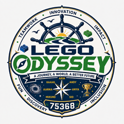

Every time an animal walks past our trap, its photos show up here. Use the site to check what the AI saw and to look for patterns.
anya. No email needed.The trap takes 3 photos each time, but the Stats page counts them as one visit, so one coyote isn't counted three times.
The AI is good but not perfect. Every photo we check makes our results more trustworthy, and the Stats page uses our checks to show the judges how accurate the AI is.
✓ RightPress it when you're sure the AI named the animal correctly.
✎ FixPress it when the AI got it wrong, then pick the right animal from the menu. If it's not on the menu, choose other… and type it.
not surePress nothing. Leave it for a teammate, or ask. A wrong check is worse than no check.
Empty photo (just bushes)? Fix it to no animal. A person? Fix it to person. Both go to the Trash. Tick only photos nobody has checked on the Photos page to find the ones that still need you.